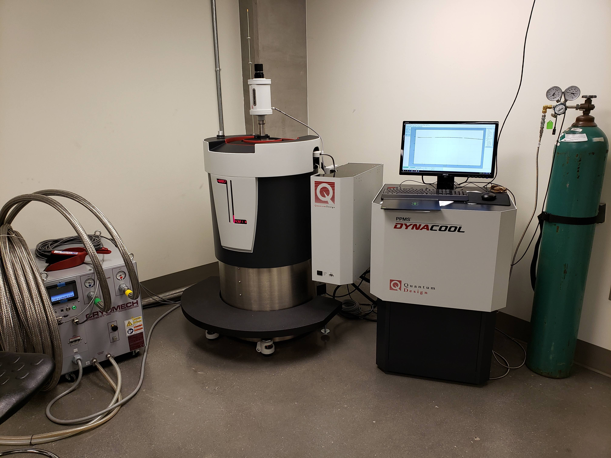
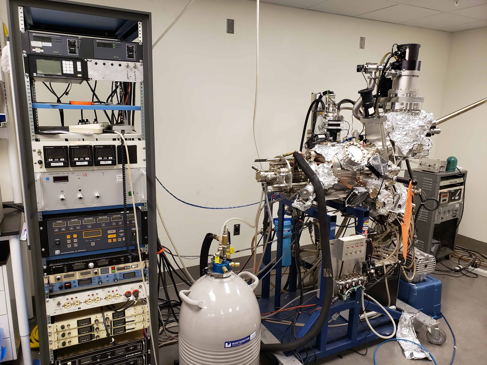
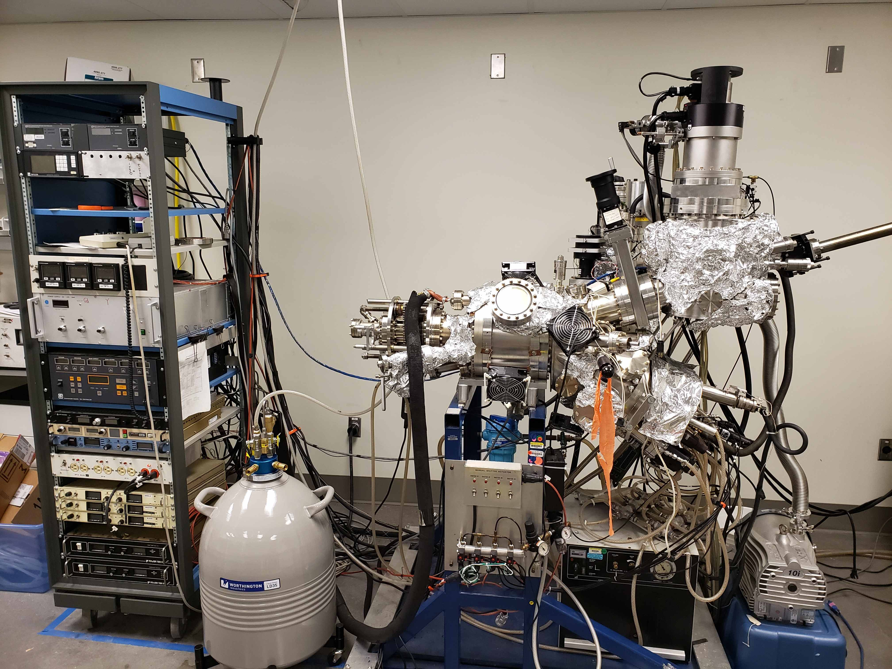
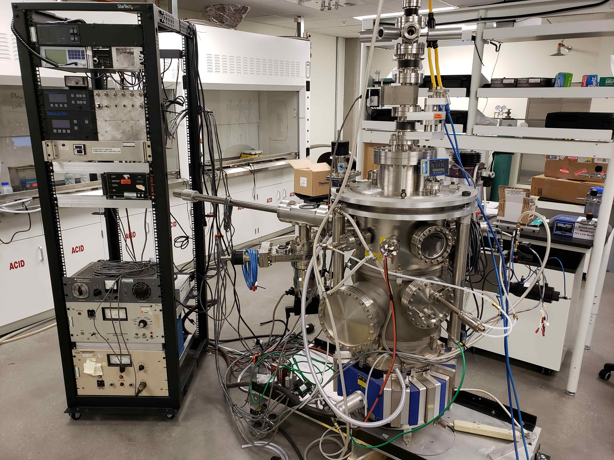
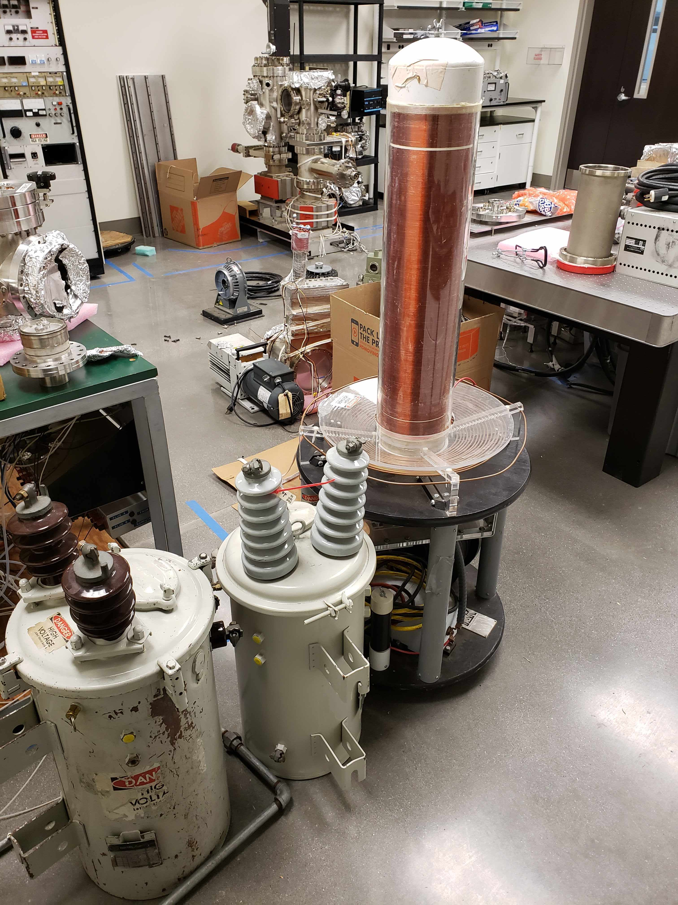
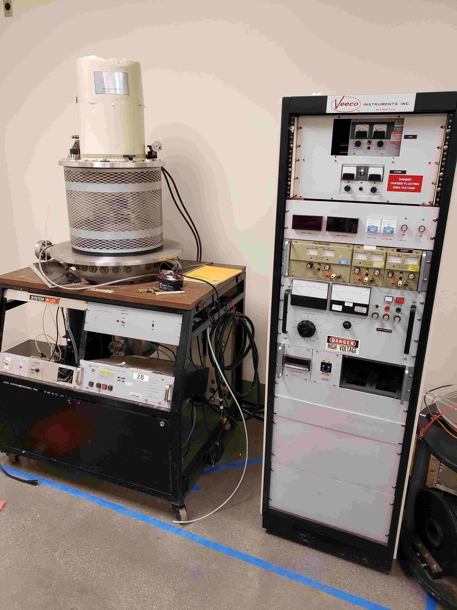

Gilbert Group
Instrumentation
Physical Properties Measurement System (PPMS) vibrating sample magnetometer (VSM), AC/DC transport

Molecular Beam Epitaxy (MBE) thin-film growth instrument, five thermal K-cells, one e-beam source. Donated by the National Institute of Standards and Technology (NIST) as part of the excess equipment transfer program.
 Magnetron sputtering chamber, with at-target gas injection and annular ring for post-annealing in reactive gases. Infrared substrate heater for deposition and post-annealing at up to 1000 degrees Celsius. Equipment on loan from Oak Ridge National Laboratory.
Outreach Tesla coli, donated by the University of California at Santa Cruz. Highlighted in the New York Times and ABC News.
Ion-mill and etching instrument.
Sputtering chamber, which will be at the core of a quantum materials deposition cluster, currently under development.